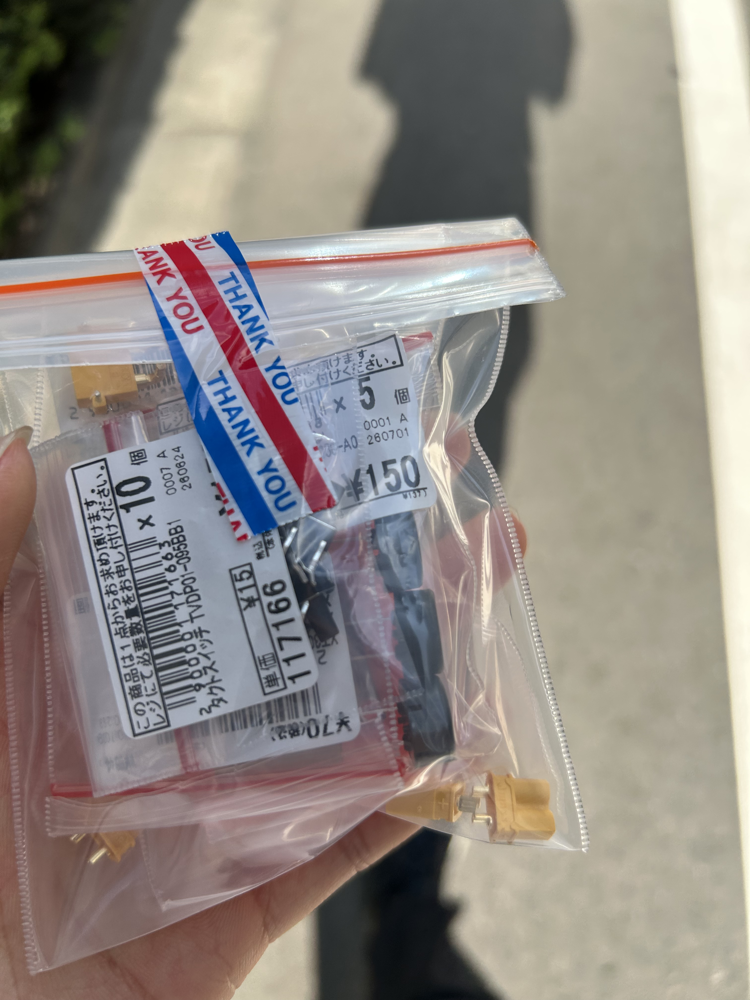
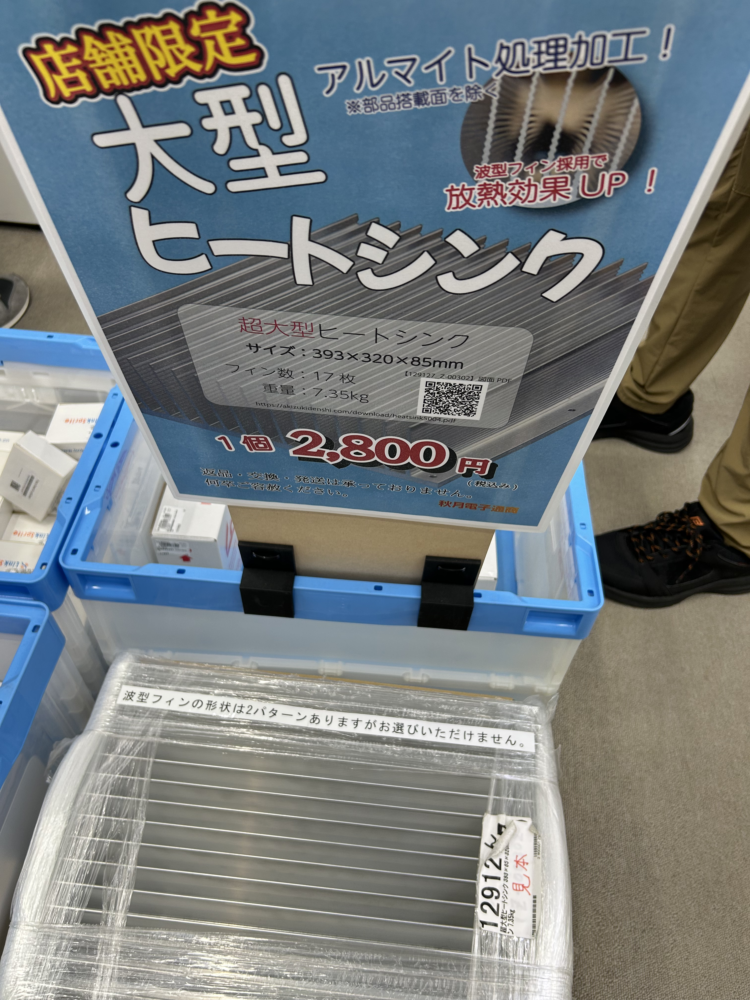
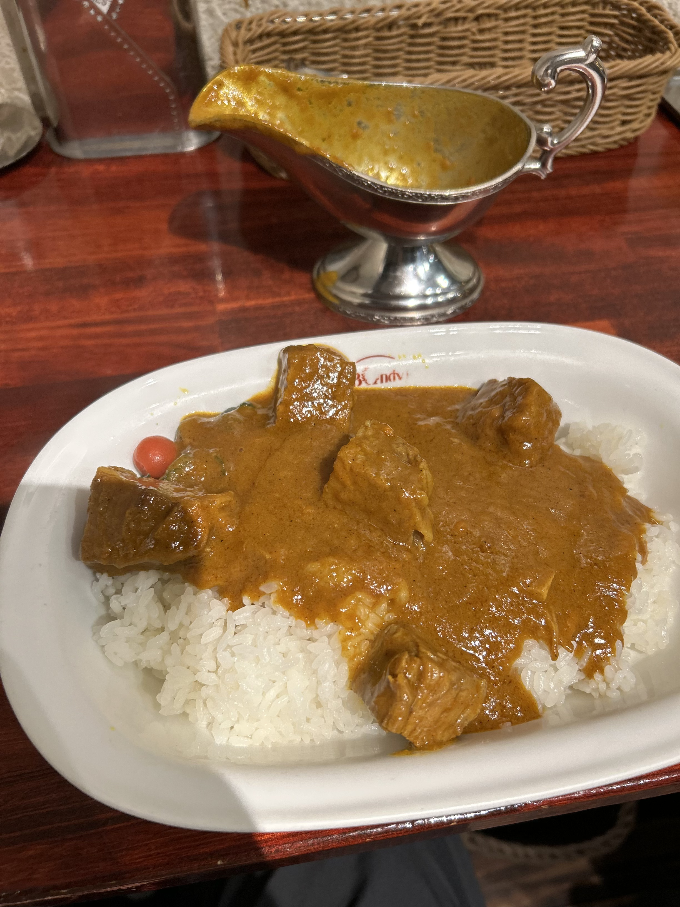
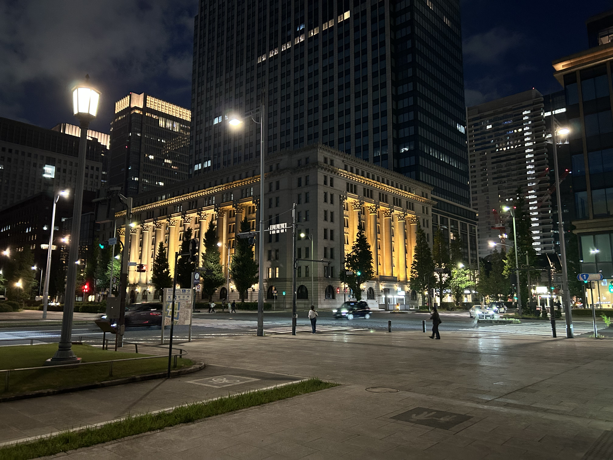

あきはば〜ら
最近、電子部品を買うついでに出かけたかったので秋葉原に行きました。
近頃、プリント基板を使った名刺を作って会った人に見せびらかして楽しんでみようと思ったので、ちょっとずつ設計して発注したのでついに部品購入のタイミング。通販だと味気ない&ネジとかよくわからないのでお出かけも兼ねて現地に行く事にしました。
買ったのはここらへんの部品です。
- 秋月電子通商で、ちっちゃいディスプレイとコネクタ、ブザー
- 千石電商で、基板用のネジとナット


季語はヒートシンク
買い物している最中すぐ横に中古PCショップがあったので、ちょっと覗いてみたら、MacBook Proが売ってて買いかけました。
なんとか心を落ち着かせて散財を防ぎました。
その後神保町に行って、ボンディのカレーを食べました。

とーてもおいしかた。
その後南進論を採用して皇居に行ったところ、なんと………………………普通に時間外で入れませんでした。
そのため、皇居の東側をぐるっと回る逆走皇居ランナー(徒歩)になって桜田門まで行きました。
これは松ぼっくりのパクリじゃないでしょうか??
変を起こすことを失敗したので千代田線で逃走しました。

寝過ごしましたが私は元気です。
基板の配線ミスも見つかりましたが、私は元気です。